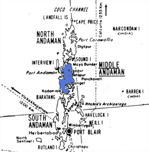

|
Digitized
Inventory of Animal Resources: Mammalia |
Taxonomic
Details
----- Scientific Name
----- Classification
----- Synonyms
----- Common Names
Other
Biological Details
----- Habit and
Habitat
----- Distribution
---------- Extent of
Occurrence
---------- Area of
occurrence
---------- Altitude
---------- Population
-----
Conservation Status
-----
Diagnostic
Features
-----
Breeding system
Miscellaneous
Information
Literature
Scientific Name : Crocidura hispida, Thomas
Classification:
Order:Insectivora
Family:Soricidae
Subfamily:Crocidurinae
Synonyms:
Not
Available
Common Names: Andaman
spiny shrew,Regional Names: Not Known
Threats:
Habitat Fragmentation and Loss of Habitat; Effect
of threats on population (Perceived or inferred): Can't say
Trade:
Not Known; Parts in trade: Not
Known; Effect of trade on population
(Perceived or inferred): Can't say
Terrestrial and fossorial, Habitat Structure: Living in burrows
Within
Indian limits the species is known to occur only in middle Andaman Islands.
Endemism: Endemic
to Andaman Islands of India.
Extent of Occurrence 2001-5000
sq.kms.
Area of occurrence: No. of Locations: One (Middle Andaman Island); Type: Isolated
Altitude:
Not Known
Population:
Population:
Global
Population: Not Known.; No.
of
mature individuals in all the populations: Not known
Captive Population: Not known.
Life span:
(Wild): Not Known.; (Captivity): Not
Known
Population Trend: Not Known.
Conservation status: CITES
APPENDIX: Not
Listed; Indian Wildlife (Protection)
Act (1972) (As amended
up
to 2002): Schedule Not Listed; Part ; Indian
Red Data Book (IUCN, 1994): Not Listed; IUCN
(1998) (Proposed): Endangered (National); IUCN (2002) (Proposed): Endangered (Global) based on Version
2.3(1994) (IUCN, 2003);
Measurements: (In mm) Head and Body Length: 85.0, Tail Length:
103.0, Hind feet: 25.5, Greatest Length of the skull: 28.0, Upper tooth row:
12.3, M2 -M2 width: 8.4
Taxon
related studies recommended: In-Situ
Survey, Monitoring and Taxonomic studies
Museum
Records:
Locality: Northern end of Middle
Andaman Islands;
Year: 1913;
Collector: Thomas; Name
of Museum: British (Natural History) Museum, London

Corbet,
G. B. and Hill,J. E. 1992 The
Mammals of The Indomalayan region 488pp. Publisher: Oxford
University press, London
Ellerman, J. R. and Morrison-Scott, T. C. S. 1951 Checklist
of Palaearctic and Indian Mammals 810pp. Publisher: British
Museum (Natural History) London
Molur, S.; Nameer, P. O. and Walker, S. 1998 Report of the Workshop “ Conservation Assessment and Management plan
for Mammals of India.” (BCPP- Endangered Species Project) 176pp. Publisher: ZooOutreach
Organistaion, Conservation Breeding Specialist Group India, Coimbatore, India.
Tikader, B. K. and Das, A. K 1985 Glimpses
of animal life of Andaman and Nicobar Islands 177pp. Publisher:
Zoological Survey of India, Kolkata